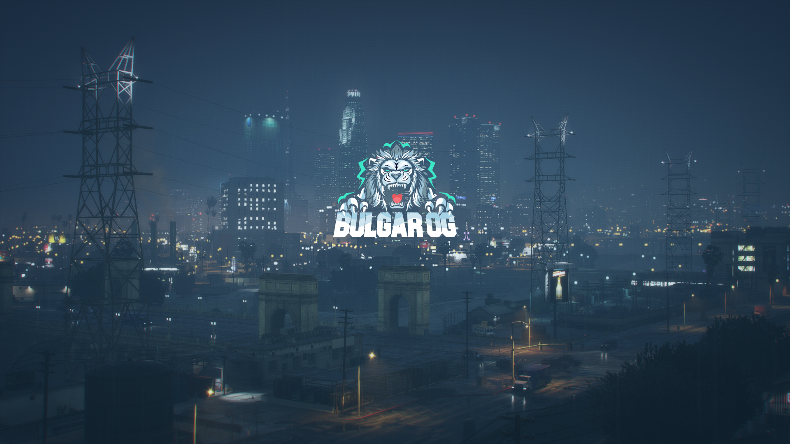

Избери Локация
Който знае да чака, всичко му идва на време.
Последна Локация
Вашият Апартамент

Какъв персонаж ще играете?
Социален
В разнообразната социална среда на града, създайте връзки, които изграждат сложна мрежа от приятелства и вдъхновение. Създайте собствен бизнес или станете влиятелна фигура в обществото? Изправете се пред предизвикателствата, които ви очакват чрез амбициите на вашия персонаж.
Криминален
Изкачете се на върховете на организираната престъпност чрез своя хладнокръвен ум, брутални дейности, хакерски умения,стратегии или трафика на наркотици. Разработете амбициозни планове за разширение на своята престъпна империя и установете абсолютен контрол над нелегалните операции в града.
Полицай
Чувствате преданост, гледайки полицейската униформа? Отличавате се с неотклонима целеустременост и стремеж към правосъдие, докато поддържате баланс между справедливост и човечност? Поддържайте добри отношения с колегите си, изграждайте съюзи и взаимопомощ в борбата с престъпността. Изчистете улиците от престъпниците и поддържайте закона справедливо.
Медик
Вие сте състрадателен и самоотвержен човек, който излъчва спокойствие и увереност? Квалифицирайте се на високо ниво в отделенията по спешна медицина и предоставете неотложна медицинска помощ в бързо реагиращи бедствия и случаи. Подобрете системата за здравеопазване и развитие на нови методи за лечение с вашия опит в медицинската сфера.
Създайте задълбочена история на персонажа, която описва миналото и мотивациите му.
Потвърди моя избор